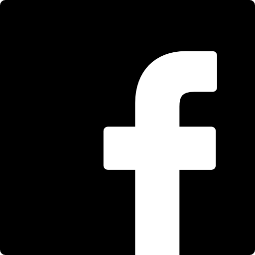
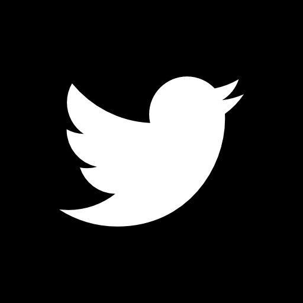

Le WWF est l’une des organisations internationales de conservation de la nature indépendantes les plus étendues et les plus respectées au monde. Notre réseau est composé de plus de 90 bureaux dans plus de 65 pays. Nous agissons aussi bien à l’échelle locale que globale.
Le WWF est né en 1961. Il coordonne aujourd’hui plus de 1 000 projets à travers le monde. La plupart des projets WWF se déroulent à l’échelle locale et sont très diversifiés. Ils vont de la plantation d'arbres au Congo à des actions de visibilité dans votre supermarché. De la sauvegarde de l’habitat des orangs outans à la création de réserves pour le panda géant.
> EN SAVOIR PLUS